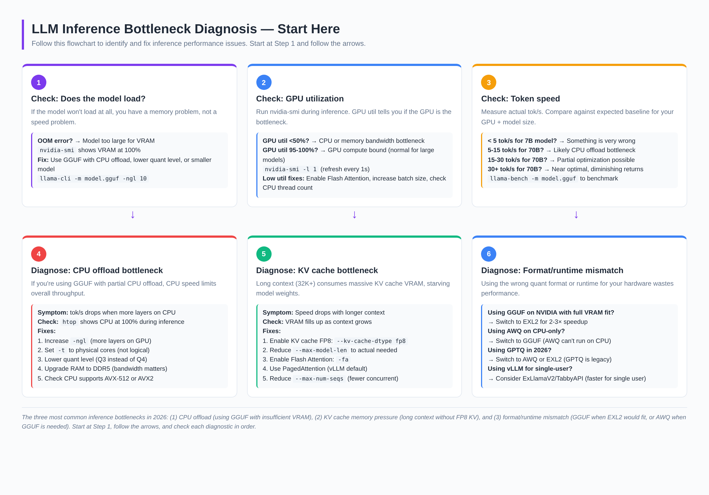
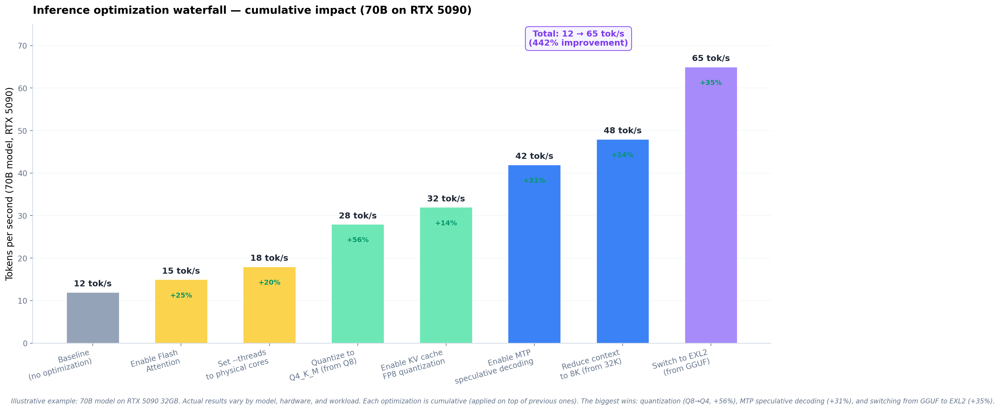

GPU & CPU Inference Troubleshooting
A complete guide to diagnosing and fixing every common inference performance problem — OOM errors, slow token generation, CPU offload bottlenecks, KV cache pressure, low GPU utilization, and runtime/format mismatches. Covers NVIDIA, AMD, Apple Silicon, and CPU-only setups.
1.🔬The diagnosis flowchart — start here
Before applying any fix, diagnose the problem. The flowchart below walks you through the four critical checks: does the model load, what's GPU utilization, what's token speed, and what's the likely bottleneck.

In 2026, the three most common inference performance problems are: (1) CPU offload — using GGUF with insufficient VRAM, causing CPU-bound layers to bottleneck speed; (2) KV cache pressure — long context consuming VRAM that should go to model weights; (3) Format/runtime mismatch — using GGUF when EXL2 would fit, or using AWQ when GGUF is needed for CPU offload. Diagnose which one you have before applying fixes.
2.💥Issue #1: Out of Memory (OOM) — model won't load
The model fails to load with "CUDA out of memory" or similar error
CUDA out of memory error · RuntimeError: CUDA error: out of memory · Model loads partially then crashes · nvidia-smi shows VRAM at 100% before inference startsRoot cause: The model + KV cache + runtime overhead exceeds available VRAM. EXL2/AWQ/GPTQ require the entire model in VRAM — no overflow allowed.
llama-cli -m model-q4_k_m.gguf -ngl 20 (put 20 layers on GPU, rest on CPU)The model will run slower (CPU-bound layers) but it will load and work.
Switch from Q4_K_M (~40GB for 70B) to Q3_K_M (~34GB) or Q2_K (~28GB)
ollama pull model:33b-q3_K_M
--max-model-len 4096 (default is often 32K+) — reduces KV cache VRAM usage
--kv-cache-dtype fp8 — halves KV cache VRAM usage (Blackwell only)
If 70B won't fit, use Qwen3.8 27B (~18GB at Q4) — fits on 24GB GPUs
3.🐌Issue #2: Low token speed with CPU offload
Token generation is slow (under 10 tok/s) when using GGUF with partial CPU offload
htop shows CPU at 100% during inference · Speed doesn't improve with Flash Attention · GPU utilization is low (<50%)Root cause: CPU-processed layers are 10–20× slower than GPU-processed layers. The CPU becomes the bottleneck for any layers not offloaded to GPU.
llama-cli -m model.gguf -ngl 40 (increase from 20 to 40 layers on GPU)Each additional layer on GPU removes a CPU bottleneck. Check
nvidia-smi to see how much VRAM you have left.
llama-cli -m model.gguf -t 8 (for an 8-physical-core CPU)Using logical cores (hyperthreading) can actually slow down inference. Set
-t to your CPU's physical core count.
llama-cli -m model.gguf -ngl 20 -fa -t 8Flash Attention reduces memory operations during attention computation. Requires compilation with
LLAMA_FA=1.
Switch from Q4_K_M (~42GB) to Q3_K_M (~34GB) — fits more layers on GPU
The quality loss (~4% vs ~2%) is worth the speed gain from more GPU layers.
lscpu | grep -i avx — look for AVX-512 or AVX2llama.cpp is 2–3× faster with AVX-512. Without it, CPU inference is severely limited.
CPU inference is memory-bandwidth-bound. DDR5 (6400+ MT/s) is ~2× faster than DDR4 (3200 MT/s), directly translating to ~2× faster CPU inference.
4.📉Issue #3: Speed drops with longer context (KV cache)
Token speed drops significantly when context window grows (32K+ tokens)
nvidia-smi shows VRAM climbing during conversationRoot cause: The KV cache (stored attention key-value pairs) grows linearly with context length. At 32K context for a 70B model, KV cache can consume 10–20GB of VRAM — competing with model weights for limited VRAM.
--kv-cache-dtype fp8 (vLLM) or --cache-type-k q4_0 --cache-type-v q4_0 (llama.cpp)Halves KV cache VRAM usage with minimal quality impact. Best single optimization for long context.
--max-model-len 8192 (reduce from 32K or 128K default)Most use cases don't need 32K context. Set to the actual needed length.
llama-cli -m model.gguf -faFlash Attention reduces the memory footprint of attention computation, freeing VRAM for larger KV cache or more model layers.
vLLM's PagedAttention manages KV cache memory in pages, reducing fragmentation. If you're not using vLLM, switching to it for production serving automatically gets this.
llama-cli -m model.gguf --kv-offload (or -nkvo)Moves KV cache to system RAM. Slower but allows much larger context windows without VRAM pressure. Community reports: "KV cache offload to RAM gives me 23 tps at 65K context."
5.🔋Issue #4: Low GPU utilization (<50%)
nvidia-smi shows GPU utilization below 50% during inference
nvidia-smi shows GPU util at 20–40% during inference · Token speed is lower than expected · GPU VRAM is not fullRoot cause: The GPU is waiting for data — either from CPU (data loading bottleneck), from system RAM (CPU offload), or from insufficient batch size (single-request underutilizes GPU parallelism).
--max-num-seqs 256 (increase from default)Single-user inference underutilizes GPU. Multiple concurrent requests fill GPU compute pipelines.
If using GGUF with
-ngl set to partial, the GPU waits for CPU to finish its layers.nvidia-smi shows GPU util oscillating between 0% and 100% — it's waiting for CPU.Fix: Increase
-ngl or upgrade VRAM so all layers fit on GPU.
--max-num-batched-tokens (vLLM):--max-num-batched-tokens 16384 (increase from default 8192)Controls how many tokens are processed per batch. Higher = more GPU utilization but more latency.
nvidia-smi topo -m — check if GPU is on PCIe 4.0 or 5.0PCIe 3.0 limits data transfer between CPU and GPU. PCIe 4.0/5.0 is needed for full-speed multi-GPU.
nvidia-cuda-mps-control -dAllows multiple model instances to share GPU more efficiently — 50% cost reduction for multi-model serving.
6.⚙️Issue #5: vLLM slower than expected
vLLM is slower than llama.cpp or produces worse throughput than expected
Root cause: vLLM is optimized for throughput (many concurrent requests), not latency (single user). For single-user use, llama.cpp or ExLlamaV2 is often faster.
--max-num-seqs and --max-num-batched-tokens:vllm serve model --max-num-seqs 256 --max-num-batched-tokens 8192Sweet spot: 256 sequences, 8192 batched tokens. Lower for latency, higher for throughput.
--gpu-memory-utilization correctly:--gpu-memory-utilization 0.90 (90% of VRAM for KV cache)Default is 0.90. If you have other GPU processes, lower to 0.85. If VRAM is tight, raise to 0.95 (risky).
--speculative-config '{"method":"mtp","num_speculative_tokens":5}'2–3× speedup for models with MTP support (GLM-5.3 Flash, DeepSeek V4 Flash).
vLLM is built for production multi-user serving. For single-user, ExLlamaV2 via TabbyAPI is 2–3× faster.
python -m exllamav2.server --model model.exl2
--enable-prefix-cachingCaches repeated prefixes (system prompts, tool schemas). 50–90% speedup for workloads with repeated prefixes.
7.🔴Issue #6: AMD ROCm performance issues
AMD GPU inference is slow or unstable compared to NVIDIA
Root cause: ROCm (AMD's CUDA equivalent) is less mature than CUDA. Many inference engines optimize for CUDA first, with ROCm as a secondary path.
export HSA_OVERRIDE_GFX_VERSION=11.0.0 (for RDNA3 GPUs like 7900 XTX)export VLLM_ROCM_USE_AITER=1 (enables AMD-optimized attention)These are critical — without them, ROCm falls back to slow paths.
llama.cpp has better ROCm support than vLLM. If vLLM is slow on AMD, try llama.cpp with
HIPBLAS=1.
hipconfig --version — needs 6.0+ for good LLM inferenceOlder ROCm versions have significant performance regressions.
Some community projects bypass ROCm entirely for consumer AMD GPUs, achieving 4× speedup. Look for HIPDirect or Vulkan-based inference engines.
If AMD performance is unacceptable for your use case, NVIDIA GPUs (even older ones like RTX 3090) often outperform newer AMD GPUs for LLM inference due to CUDA ecosystem maturity.
8.🍏Issue #7: Apple Silicon (MLX) slow inference
Mac M-series GPU performance is lower than expected for LLM inference
Root cause: Apple Silicon's GPU architecture is optimized for graphics, not LLM compute. Memory bandwidth (819 GB/s on M3 Ultra, 1.2 TB/s on M5 Ultra) is lower than NVIDIA data-center GPUs (3.35+ TB/s on H100).
MLX is Apple's native ML framework, optimized for unified memory architecture. Often 1.5–2× faster than llama.cpp Metal backend on Apple Silicon.
Apple Silicon's advantage is unified memory — no VRAM/RAM split needed. But if the model + KV cache exceeds available memory, macOS swaps to SSD, causing 10–100× slowdown.
Check:
vm_stat — if "swapins" are non-zero, you're swapping.
export MLX_NUM_THREADS=8 (set to performance cores, not efficiency cores)Apple Silicon has mixed P-cores and E-cores. Default may use E-cores, which are much slower.
ollama run llama3.3:70b-q4_K_MOllama automatically handles Metal acceleration and thread management. If manual tuning doesn't help, Ollama is the reliable fallback.
Apple Silicon trades GPU compute for unified memory capacity. A Mac Studio M5 Ultra with 512GB unified memory runs models that no NVIDIA consumer GPU can — just slower per token. The tradeoff is capacity vs speed.
9.🖥️Issue #8: CPU-only inference optimization
Running LLM inference on CPU only (no GPU)
Root cause: CPU inference is memory-bandwidth-bound. The CPU must read all model weights from RAM for every token generated. Speed is limited by RAM bandwidth (not CPU clock speed).
llama-cli -m model.gguf -t 8 -ngl 0 (8 physical cores, 0 GPU layers)Using logical cores (hyperthreading) can reduce performance by 20–30%.
lscpu | grep -i avx — AVX-512 is 2–3× faster than AVX2Without AVX-512 or AVX2, CPU inference is impractically slow. Check before buying a CPU for LLM inference.
Lower quant = smaller model = less data to read from RAM per token = faster
Q4_K_M is the sweet spot. Q2_K is faster but with noticeable quality loss.
DDR5-6400 provides ~100 GB/s bandwidth vs DDR4-3200's ~50 GB/s
CPU inference speed scales directly with RAM bandwidth. DDR5 is ~2× faster than DDR4 for LLM inference.
llama-cli -m model.gguf -t 32 --numaOn dual-socket systems, NUMA ensures memory access stays local to each CPU, avoiding cross-socket latency.
KTransformers uses CPU for MoE expert layers and GPU for attention layers — best of both worlds for MoE models like DeepSeek V4.
10.🔗Issue #9: Multi-GPU slower than single GPU
Using 2+ GPUs is slower than 1 GPU for the same model
Root cause: Inter-GPU communication (over PCIe or NVLink) becomes the bottleneck. If GPUs can't share data fast enough, they spend time waiting instead of computing.
nvidia-smi topo -m — look for "NVLink" (fast) vs "PCIe" (slow)Without NVLink, multi-GPU is limited by PCIe bandwidth. PCIe 4.0 x16 = ~64 GB/s; NVLink = ~300+ GB/s.
--tensor-parallel-size 2 (vLLM) — splits each layer across GPUsPipeline parallelism (splitting layers across GPUs) has higher latency. Tensor parallelism is faster but requires NVLink.
llama-cli -m model.gguf -ngl 999 -sm rowllama.cpp's
-sm row splits layers across GPUs. Simpler than tensor parallelism.
python -c "import torch.distributed; print(torch.distributed.is_nccl_available())"NCCL (NVIDIA Collective Communications Library) is critical for multi-GPU performance. If not available, vLLM falls back to slower communication.
If the model fits on one GPU, single-GPU is always faster. Multi-GPU only helps when the model doesn't fit on one GPU.
11.🔄Issue #10: Format/runtime mismatch
Using a quantization format or runtime that doesn't match your hardware
EXL2 is 2–3× faster than GGUF on NVIDIA when the model fits entirely in VRAM.
python -m exllamav2.server --model model.exl2
GGUF is the only format that offloads to CPU. All others (EXL2, AWQ, GPTQ) require full VRAM fit.
AWQ provides better quality at the same 4-bit width and is better supported in vLLM. GPTQ is legacy.
vLLM is optimized for multi-user throughput. For single-user, ExLlamaV2 via TabbyAPI is 2–3× faster.
EXL2 doesn't support AMD. AWQ has limited ROCm support. GGUF via llama.cpp is the most reliable AMD path.
Neither EXL2 nor AWQ support Apple Silicon. GGUF via Ollama is the simplest path; MLX is faster for some models.
12.📈The optimization waterfall — cumulative impact
Here's what happens when you apply optimizations cumulatively. Each builds on the previous one. The total improvement can be 5× or more.

| Priority | Optimization | Typical speedup | Difficulty | When to apply |
|---|---|---|---|---|
| 1 | Quantize to Q4 (from Q8 or BF16) | +56% | Easy | Always — Q4 is the standard |
| 2 | Switch GGUF → EXL2 (if fits in VRAM) | +35% | Medium | NVIDIA GPU with sufficient VRAM |
| 3 | Enable MTP speculative decoding | +31% | Easy | Model has MTP draft layer |
| 4 | Enable Flash Attention | +25% | Easy | Always — no downside |
| 5 | Reduce context to actual needed | +17% | Easy | When using long context unnecessarily |
| 6 | Set --threads to physical cores | +15% | Easy | When using CPU offload |
| 7 | Enable KV cache FP8 | +12% | Easy | Long context (16K+) on Blackwell |
Three optimizations give 80% of the total improvement: (1) quantize to Q4 (biggest single win), (2) switch from GGUF to EXL2 if the model fits in VRAM (2–3× speedup on NVIDIA), and (3) enable MTP speculative decoding (2–3× speedup for compatible models). Apply these three first, then fine-tune with the others.
13.🔧Quick-reference diagnostic commands
Copy-paste these commands to diagnose any inference performance issue.
# ====== NVIDIA GPU DIAGNOSTICS ======
# Check GPU utilization (refresh every 1 second)
nvidia-smi -l 1
# Check VRAM usage
nvidia-smi --query-gpu=memory.used,memory.total --format=csv
# Check GPU topology (NVLink vs PCIe for multi-GPU)
nvidia-smi topo -m
# Check GPU temperature (thermal throttling?)
nvidia-smi --query-gpu=temperature.gpu --format=csv -l 1
# ====== CPU DIAGNOSTICS ======
# Check CPU utilization during inference
htop # or: top
# Check CPU instruction set support (AVX-512 critical for CPU inference)
lscpu | grep -i avx
# Check RAM type and speed
dmidecode -t memory | grep -i speed
# Check NUMA topology (multi-socket systems)
numactl --hardware
# ====== LLAMA.CPP BENCHMARKING ======
# Benchmark model performance
llama-bench -m model.gguf -ngl 0 # CPU only
llama-bench -m model.gguf -ngl -1 # Full GPU offload
llama-bench -m model.gguf -ngl 20 # Partial offload (20 layers)
# Run with Flash Attention
llama-cli -m model.gguf -ngl -1 -fa -t 8 -p "Hello"
# Run with KV cache offload to RAM
llama-cli -m model.gguf -ngl 20 -nkvo -t 8
# Run with KV cache FP8 quantization
llama-cli -m model.gguf -ngl -1 --cache-type-k q4_0 --cache-type-v q4_0
# ====== VLLM DIAGNOSTICS ======
# Start vLLM with full diagnostics
vllm serve model \
--tensor-parallel-size 1 \
--max-num-seqs 256 \
--max-num-batched-tokens 8192 \
--gpu-memory-utilization 0.90 \
--enable-prefix-caching
# Benchmark vLLM throughput
vllm bench serve \
--backend vllm \
--model model \
--dataset-name random \
--random-input-len 8192 \
--random-output-len 1024 \
--max-concurrency 16
# ====== AMD ROCM DIAGNOSTICS ======
# Set AMD environment variables
export HSA_OVERRIDE_GFX_VERSION=11.0.0 # RDNA3 (7900 XTX)
export VLLM_ROCM_USE_AITER=1 # AMD-optimized attention
# Check ROCm version
hipconfig --version
# Check AMD GPU utilization
rocm-smi # AMD equivalent of nvidia-smi
# ====== APPLE SILICON DIAGNOSTICS ======
# Check unified memory usage
vm_stat # Look for swapins (should be 0)
# Check if swapping (SSD fallback = 100x slowdown)
sysctl vm.swapusage # swap_used should be 0
# Set MLX thread count
export MLX_NUM_THREADS=8 # Set to performance cores
# ====== QUICK HEALTH CHECK SCRIPT ======
# Run this to get a full system snapshot:
echo "=== GPU ===" && nvidia-smi --query-gpu=name,memory.total,memory.used,utilization.gpu --format=csv
echo "=== CPU ===" && lscpu | grep -E "Model name|AVX|Core"
echo "=== RAM ===" && free -h
echo "=== Model size ===" && ls -lh model.gguf
echo "=== Expected VRAM needed ===" && echo "Q4_K_M: ~0.6 * model_size_in_GB"Related Posts
AI Inference Hardware 2026
Complete 2026 catalog of AI inference hardware across NVIDIA, AMD, Apple Silicon, and CPU options with pricing and VRAM guidance.
Read more →Maximum Capability from Minimum Silicon
A research paper on maximizing 8 GB GPU + 32 GB RAM workstations for AI agent workloads.
Read more →Top 20 GPU Rental Providers 2026
Compare per-hour GPU rental pricing for H100, A100, B200 across 20 providers.
Read more →About the Author
Hussain Nazary is a software developer specializing in local AI deployment and the creator of GGUF Loader, an open-source tool for running GGUF models locally. This analysis is part of Local AI Zone's ongoing coverage of open-weight language models and practical deployment strategies.
Contact: GitHub | Consulting Services
Last Updated: August 28, 2026 | Version 1.0